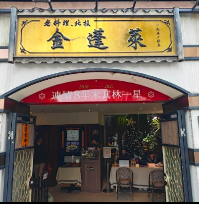
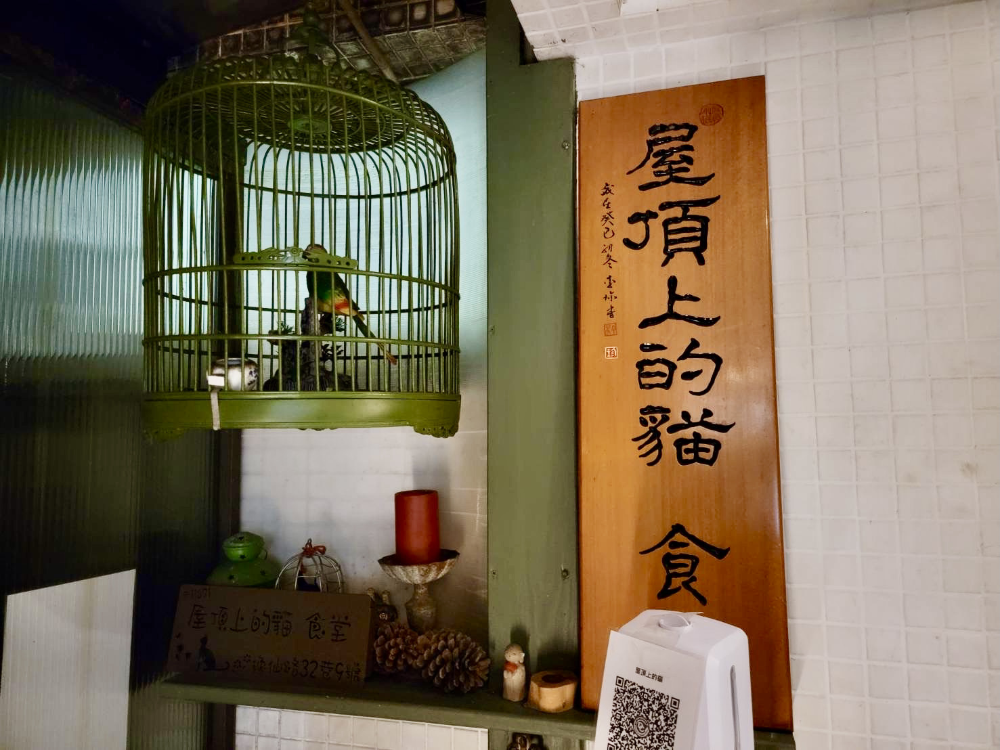

金蓬萊遵古台菜餐廳
2009年，第二代料理人陳博璿接棒，將金蓬萊推至新高峰。新餐廳時尚中兼有東方典雅，推出清爽不膩的創意料理。六十多年來的原汁原味與精神灌注在每一道菜，歡迎您來喚醒記憶中的老味道。

MaoInn Steak - 錨隱廚
Hygge 丹麥語中簡單美好的生活。瀰漫著餐、酒、花、書的氛圍，承襲經典極致厚切牛排與鮮活龍蝦饗宴，盡情享受約會、慶生、宴客的美好時光。

屋頂上的貓 私廚
一樓庭園住宅入口溫馨有藝術家氣息，兩位主廚 Roy & Pong Pong 為客人準備精心料理。用餐空間分開招待不同客人，是一間以家庭溫暖打造的私廚，讓您體驗烹飪者的心意與堅持。